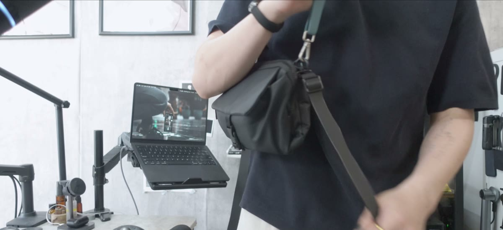
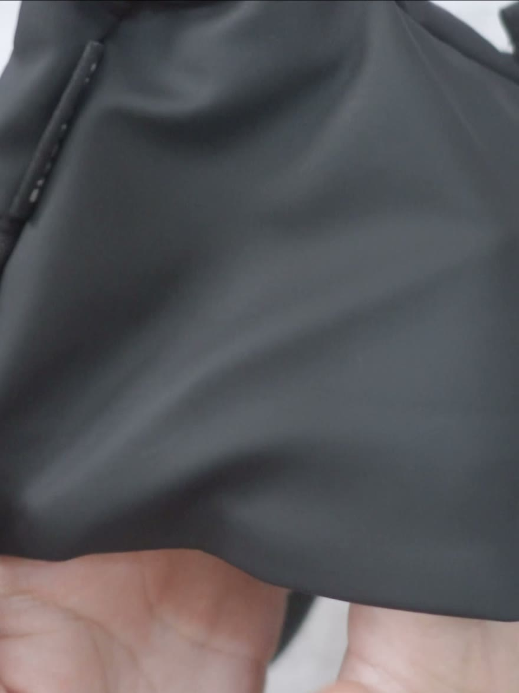
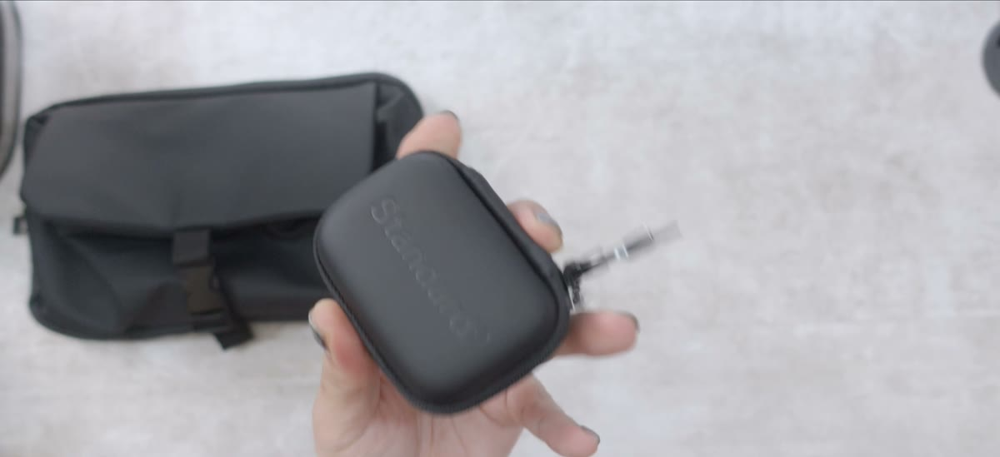

4.5room
YOUTUBE ／ 2022.12.14 —
YOUTUBE ／ 2022.12.14 —
YouTube Data API 実測（2026.08.05 時点）
最新の1本
2026.08.02 ／ 2,726 回

持ち出すもの ／ 16点
毎日持ち歩いている道具が置いてある。動画で紹介して、そのまま日常に残ったものだけ。
持ち出すもの ／ 16
かばんまわり
変わったこと ── 本を持って出るのに、かばんを選ばなくなった。
変わったこと ── 肩掛けと斜め掛けを、その日で変えられるようになった。
変わったこと ── 読みかけの本を、そのまま放り込めるようになった。
変わったこと ── 財布のための場所が、かばんから消えた。
手で書くための道具
変わったこと ── 思いついたことを、立ったまま書くようになった。
変わったこと ── 本に折り目をつけなくなった。
変わったこと ── ペンを4本持ち歩くのをやめた。
変わったこと ── 書いて消す日も、1本で足りるようになった。
持ち歩く机
変わったこと ── 作業のために家へ戻る日が、なくなった。
変わったこと ── 長い文章を、外でも書けるようになった。
変わったこと ── 音の装備が、かばんに常駐した。
変わったこと ── 音を消さずに、下げられるようになった。
腰まわり
変わったこと ── 鍵をポケットから探す時間が、なくなった。
変わったこと ── 付け外しに、両手を使わなくなった。
変わったこと ── 詰め直す工程が、なくなった。
変わったこと ── かばんを持たない日も、イヤホンが手元に残った。

サブチャンネル ／ 4.5Lab
本編に入らなかった動画と、思いついたことをそのまま出している。
679 登録者 6,487 総再生
19 本 2023.03.02 開設
YouTube Data API 実測（2026.08.05 時点）

note ／ 4_5room
動画で話しきれなかったことを、文章で置いてある。
読みもの


お仕事のご相談 ／ 実績
製品のご紹介・タイアップのご相談は、こちらで承っています。
お仕事のご相談
お受けできること
長尺レビュー／複数製品をまとめた企画動画／短尺／note での記事
得意な領域
バッグ・EDC・持ち歩き／文房具／iPad miniまわり／デスク環境／生活を整える実用品
メディア掲載
2026.05 ねとらぼ（ITmedia）に動画が記事として取り上げられました。Yahoo!ニュース・LINEニュースにも配信されています。
お約束していること
提供・PR表記は必ず明示します。そのうえで、気になった点も動画内でお伝えします。